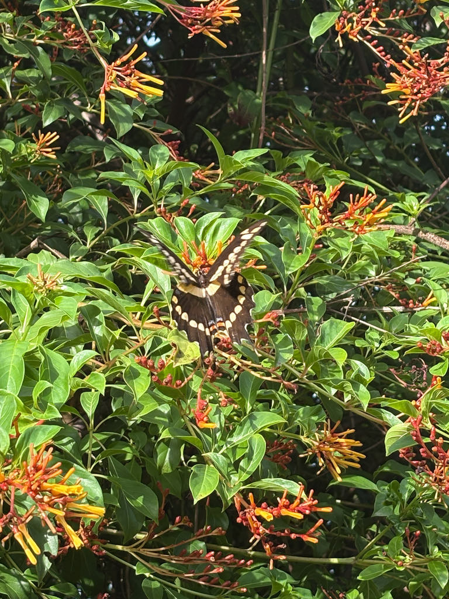

- Florida's largest butterfly — and the largest in North America — the Eastern Giant Swallowtail is hard to miss when it glides through the park. Its wingspan regularly exceeds five inches, and its bold black-and-yellow pattern is unmistakable on the wing.
- Its caterpillars are called 'orangedogs' because they feed on citrus leaves and can defoliate a young tree in short order. Look closely at the larva, though, and you'll see one of nature's better disguises: it mimics a bird dropping so convincingly that most predators ignore it entirely.
- When a caterpillar feels threatened, it everts a bright red-orange, Y-shaped organ called the osmeterium from just behind its head. The organ mimics a snake's tongue visually, and it releases a chemical cocktail — including isobutyric acid and 2-methylbutyric acid — that smells like rancid, sour citrus and drives off ants, wasps, and other invertebrate predators.
- Florida is one of the few places in the eastern United States where this butterfly can overwinter and fly year-round. Most of the continent sees only one or two brief flight seasons; here you can find adults in any month.
The largest butterfly in North America. Wingspan typically 4 to 6.5 inches; occasional individuals reach nearly 7 inches. Both sexes are large, with females often running slightly larger than males.
Wings are dark brown to black with two bold diagonal bands of yellow spots — one crossing the forewings, one sweeping across the hindwings — that meet near the body to form a rough X-shape. Hindwings have yellow-centered tails and a small blue-and-red spot near the inner margin.
Largely yellow with black borders and blue scaling near the body — a striking contrast to the dark upperside. When perched with wings open, the yellow underside is the most visible surface. A small red patch on the ventral hindwing helps distinguish this species from the similar but much rarer Schaus' Swallowtail.
The combination of large size, dark wings, and yellow banding is diagnostic. The leisurely, gliding flight is distinctive — broad wings held flat, long slow beats interspersed with extended glides.
Brown, gray, and white with a creamy saddle mark — a convincing bird-dropping mimic at every stage. Mature larvae may also show faint eyespot-like markings. When disturbed, the orange-red forked osmeterium everts from just behind the head.
Essentially silent, as with all butterflies. No calls, songs, or vocalizations at any life stage; the soft rush of large wings in flight is the only sound associated with this species.
Look for a very large, dark butterfly with a prominent yellow-banded X across the wings. The gliding, unhurried flight style is as much a field mark as the pattern — no other common Florida butterfly of this size moves quite like it. At rest with wings spread, the yellow underside is prominent; the small red spot near the hindwing tail is a reliable clincher. On host plants, search for the bird-dropping caterpillar on upper leaf surfaces or along stems.
Caterpillars feed on the foliage of plants in the citrus and rue family (Rutaceae). Native Florida hosts include wild lime (Zanthoxylum fagara) and Hercules' club (Zanthoxylum clava-herculis); common rue, hop tree, and ornamental citrus species are also used. Adults drink nectar from a wide range of flowers, with lantana, azalea, goldenrod, bougainvillea, swamp milkweed, and Japanese honeysuckle among the documented sources.
Check any flowering garden bed for nectaring adults, especially plants with larger open blooms — lantana, pentas, and azalea are reliable draws. Scan the canopy edges and open sky above the treeline for the characteristic gliding silhouette. On native Zanthoxylum shrubs or any citrus trees in the park, examine upper leaf surfaces carefully for the cryptic caterpillar. Adults often come to eye level when nectaring, making them easy to observe at close range.
Year-round in Manatee County, with adults present in every month. Multiple broods mean there is rarely a gap in the adult flight. Activity peaks during warm, sunny mornings and afternoons; on cooler winter days adults are less visible but not absent. Spring and summer tend to produce the most conspicuous numbers.
Observe as closely as you like — nectaring adults are often tolerant of a careful approach. Avoid handling butterflies, as contact can damage the microscopic wing scales. Caterpillars on host plants are safe to observe but best left in place.

- © Randall Carter (CC-BY-NC), via iNaturalist